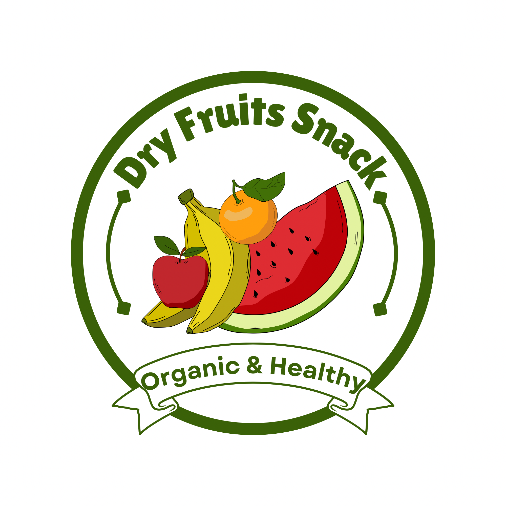
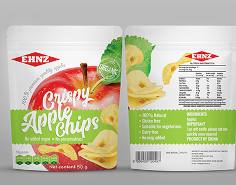
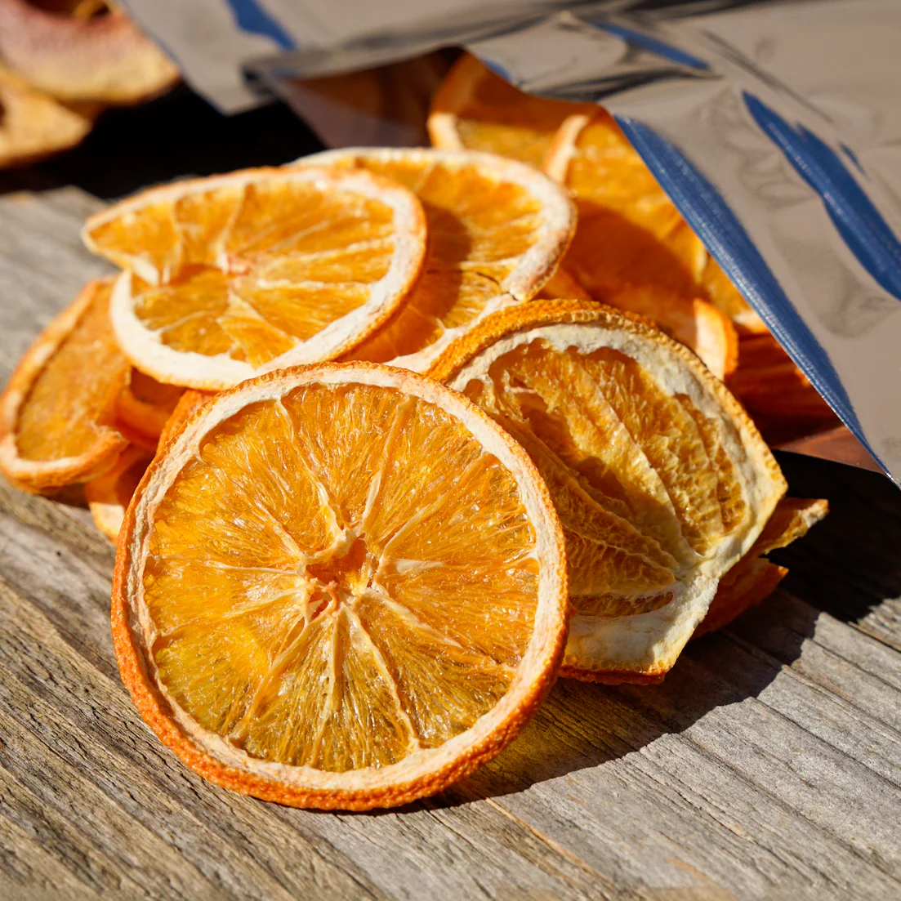
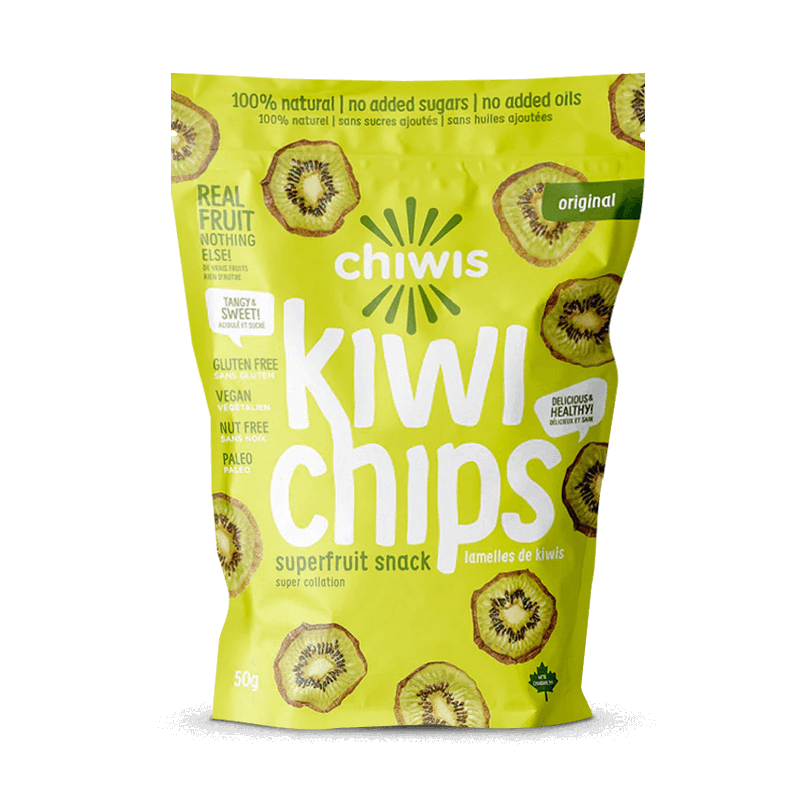

Organic & Healthy Snacks for a Better You
100% Natural Dried Fruit Chips

100% Premium quality apples with no added sugar.

Sun-dried citrus slices packed with Vitamin C.

Naturally sweet kiwi slices.
Low calorie, high satisfaction without the crash.
No added MSG, preservatives, or artificial colors.
Retains the essential vitamins and fiber of fresh fruit.
Easy to carry and perfectly portioned for on-the-go.
The Problem: Most people today rely on unhealthy, packed junk food like oily chips and candy because healthy options are hard to find.
Our Solution: At Dry Fruits Snack, we take fresh apples, oranges, and kiwis, slice them, dry them, and pack them with zero additives. We maintain the highest standards of hygiene to provide a nutritional snack that is easy to carry and ready to eat.
Our Goal: To build a brand that health-conscious customers can trust, proving that "healthy" can also be "delicious."